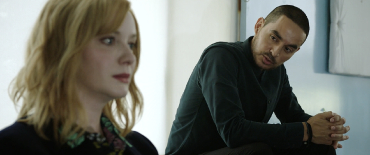

Good Girls na Netflix: Relembre o que aconteceu na 2ª temporada
A 3ª temporada da série mostra que Beth Bolands, de Christina Hendricks, está cada vez mais no mundo do crime.

Para quem acompanhou a primeira e segunda temporada de Good Girls, sabe que a série acompanha três mães suburbanas - interpretadas por Christina Hendricks, Retta e Mae Whitman - que decidem roubar um mercado para ajudar suas famílias em situações drásticas.
No entanto, além de descobrirem as dificuldades do mundo do crime, o trio acaba se envolvendo neste universo, comandado por Rio (Manny Montana). Depois de uma primeira temporada cheia de confusões, a segunda veio para mostrar que as protagonistas estavam cada vez mais empoderadas.
Atenção! Este texto pode conter spoilers de Good Girls se você não está em dia com a série.

O NOVO DESAFIO DAS PROTAGONISTAS
Agora que o Rio parece estar fora do caminho, Beth propôs seu próximo empreendimento comercial, apresentando a Annie e Ruby sua própria conta falsa. Como sugerido no trailer, as mulheres seguem essa proposta, mas não está claro em que ponto elas embarcaram na ideia e se ela vai durar ou não. Uma coisa é certa - eles estão recebendo ajuda de uma nova fonte, Lucy (Charlyne Yi), que desempenhará um papel em suas atividades.
OS RELACIONAMENTOS AMOROSOS
Ruby e Stan (Reno Wilson) estão mais fortes do que nunca quando a segunda temporada terminou com ele agora ciente de suas atividades ilícitas, e eles continuam, apesar dos desafios que isso pode representar. Enquanto isso, Dean foi visto confortando Beth quando ela volta para casa depois de seu relacionamento com o Rio. Annie, que se envolveu com F.B.I. Agente Noah (Sam Huntington), mas as coisas ficaram tensas e incertas quando ele lhe disse que estava sendo transferido para o Arizona.
A SITUAÇÃO DE BETH EM GOOD GIRLS
Ao fim a primeira temporada, os espectadores ficaram apreensivos para saber o que aconteceria com o marido de Beth, Dean (Matthew Lillard) e Rio (Manny Montana). Ao contrário da situação que deixou os espectadores imaginando, vemos Beth apertar o gatilho. Agora, quando ela descumpre o pedido de Rio após e não mata o agente Turner (James Lesure), a personagem acaba atirando no criminoso.
O Rio será salvo? Considerando a sensação de segurança de Beth nos últimos momentos da segunda temporada, pode-se supor que as chances de sobrevivência sejam maiores.
ESTÁ TUDO RESOLVIDO?
Em relação ao crime, aparentemente, sim. Boomer (David Hornsby), é encontrado vivo pela polícia após passar a temporada sumido e dado como morto e, portanto, as personagens acabam se “safando” do problema. No entanto, Rio está de olho na Beth, já que ela não cumpriu com o seu pedido (de matar o agente Turner). Na cena final, vemos o Rio e o agente conversando enquanto ele disca para a polícia - será que eles vão se unir contra as mulheres?